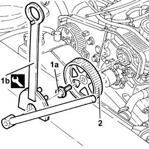

1032B61 timing belt pulley - r r
- Path
- Procedures > 10 ENGINE > 1032 TIMING SYSTEM > 1032B belt timing system > 1032B61 timing belt pulley - r r
- Kind
- repair procedure (removal / refitting; the operation number is the code)
- Applies to
- engines: 1.9 JTD 8v , 2.4 JTD 10v, 2.4 JTD 20v; all production periods
- Interactive page
- https://sloeber94.github.io/elrnDB-a156/en/#/3237767
Applies to: engines: 1.9 JTD 8v , 2.4 JTD 10v; all production periods
 Removing
Removing
 Refitting
Refitting1. Undo the bolt (1a) of the driven pulley using the tools (1b) for counter-torque.
 | Name | Country |
|---|---|---|
1b | Counter-torque | 1.822.146.000 |
| Name | Country |
|---|---|---|
1b | Counter-torque | 1.822.156.000 |
2. Remove the toothed driven pulley.

Applies to: engines: 1.9 JTD 8v , 2.4 JTD 10v; all production periods
Refitting
RemovingFit the driven pulley.
Tighten the driven pulley bolt to the specified torque using the tools for counter-torque.
 | Fastening | Component | Ø | Value (daNm) |
|---|---|---|---|---|
- | Bolt | TIMING DUCT PULLEY | M12 | 10.2 - 12.6 |
| Name | Country |
|---|---|---|
- | Counter-torque | 1.822.146.000 |
| Name | Country |
|---|---|---|
- | Counter-torque | 1.822.156.000 |
Applies to: engines: 2.4 JTD 20v; all production periods
Rather than only loosening the bolt fixing the driven toothed pulley (as indicated in 1032B10 toothed timing belt - r + r for timing adjustment or replacement ), completely undo it and remove the pulley.
Place the driven pulley back in its housing and secure it using the bolt without tightening it.